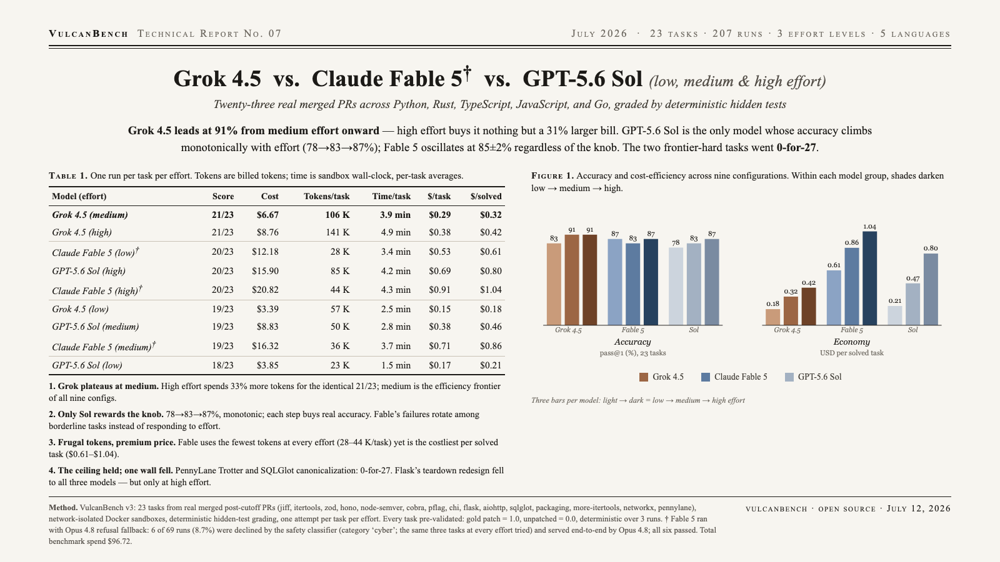

Grok 4.5 leads at 91% from medium effort onward — high effort buys it nothing but a 31% larger bill. GPT-5.6 Sol is the only model whose accuracy climbs monotonically with effort (78→83→87%); Fable 5 oscillates at 85±2% regardless of the knob. The two frontier-hard tasks went 0-for-27.

| Model (effort) | Score | pass@1 | Cost | Tokens/task | Time/task | $/solved |
|---|---|---|---|---|---|---|
| Grok 4.5 (medium) | 21/23 | 91.3% | $6.67 | 106 K | 3.9 min | $0.32 |
| Grok 4.5 (high) | 21/23 | 91.3% | $8.76 | 141 K | 4.9 min | $0.42 |
| Claude Fable 5 (low)† | 20/23 | 87.0% | $12.18 | 28 K | 3.4 min | $0.61 |
| GPT-5.6 Sol (high) | 20/23 | 87.0% | $15.90 | 85 K | 4.2 min | $0.80 |
| Claude Fable 5 (high)† | 20/23 | 87.0% | $20.82 | 44 K | 4.3 min | $1.04 |
| Grok 4.5 (low) | 19/23 | 82.6% | $3.39 | 57 K | 2.5 min | $0.18 |
| GPT-5.6 Sol (medium) | 19/23 | 82.6% | $8.83 | 50 K | 2.8 min | $0.46 |
| Claude Fable 5 (medium)† | 19/23 | 82.6% | $16.32 | 36 K | 3.7 min | $0.86 |
| GPT-5.6 Sol (low) | 18/23 | 78.3% | $3.85 | 23 K | 1.5 min | $0.21 |
† Fable 5 ran with Opus 4.8 refusal fallback: 6 of 69 runs (8.7%) were declined by the API safety classifier (category cyber; the same three tasks at every effort) and served end-to-end by Opus 4.8; all six passed. Tokens are billed tokens; time is sandbox wall-clock.
Grok plateaus at medium — and that’s the efficiency frontier. High effort spends 33% more tokens and 31% more money for the identical 21/23, failing the same two tasks. No config in the matrix beats 91.3% at $0.29/task.
Only Sol rewards the effort knob. 78.3 → 82.6 → 87.0%, monotonic; each step buys real accuracy. Fable oscillates at 85±2% (87.0 → 82.6 → 87.0) with a different failure set each run — the knob changes which borderline tasks fall, not how many.
Frugal tokens, premium price. Fable uses the fewest tokens at every effort (28–44 K/task, roughly half the agent steps of Grok) yet is the costliest per solved task ($0.61–$1.04) at $10/$50-per-M pricing.
The difficulty ceiling held; one wall fell. PennyLane Trotter fragmentation and SQLGlot internal-name canonicalization went 0-for-27 across all models and efforts. Flask’s teardown-error redesign fell to all three models — but only at high effort, making it the suite’s cleanest effort-discriminator.
| Task | Grok l/m/h | Fable l/m/h | Sol l/m/h |
|---|---|---|---|
| pennylane-trotter-fragmented | × × × | × × × | × × × |
| sqlglot-canonicalize-internal-names | × × × | × × × | × × × |
| flask-teardown-robust | × ✓ ✓ | × ✓ ✓ | × × ✓ |
| aiohttp-upgrade-deferred | × ✓ ✓ | ✓† ✓† ✓† | × ✓ ✓ |
| itertools-strip-prefix | ✓ ✓ ✓ | ✓ ✓ ✓ | × × × |
| networkx-leiden-communities | ✓ ✓ ✓ | ✓ × × | ✓ ✓ ✓ |
| sqlglot-iso8601-nanos | ✓ ✓ ✓ | ✓ × ✓ | ✓ ✓ ✓ |
The remaining 16 tasks passed everywhere. † Fable cells on aiohttp-upgrade-deferred were served by the Opus 4.8 refusal fallback.
Twenty-three tasks from real merged pull requests (Python 9, Rust 4, TypeScript 4, JavaScript 3, Go 3 — jiff, itertools, zod, hono, node-semver, cobra, pflag, chi, flask, aiohttp, sqlglot, packaging, more-itertools, networkx, pennylane), all merged after model training cutoffs, graded by deterministic hidden tests in a network-isolated Docker sandbox. One attempt per task per effort level (low, medium, high). Every task pre-validated: gold patch = 1.0, unpatched = 0.0, deterministic over 3 runs.
Pricing: Grok 4.5 $2/$6, GPT-5.6 Sol $5/$30, Claude Fable 5 $10/$50 per million tokens. Fable refusal fallback: VULCANBENCH_REFUSAL_FALLBACK=claude-opus-4-8.
{kind=link}